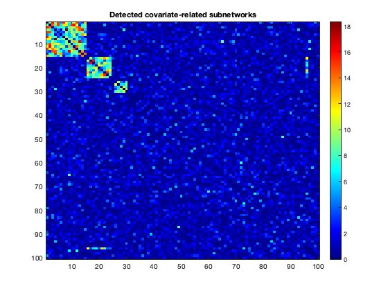

Contents
clear
warning('off','all')
Simulate network data
rng(1);
n1 = 30;n2 = 30;N=100;m1=15;m2=10;m3=5;
mu1 = 1;mu2 = 0;sigma = 1;
thresh = 0.05;
G = zeros(N);
G(1:m1,1:m1)=ones(m1);
G((m1+1):(m1+m2),(m1+1):(m1+m2))=ones(m2);
G((m1+m2+1):(m1+m2+m3),(m1+m2+1):(m1+m2+m3))=ones(m3);
for i=1:N
G(i,i)=0;
end
G_vec = squareform(G);
A = zeros(size(G_vec,2),n1);
B = zeros(size(G_vec,2),n2);
p_vec = zeros(size(G_vec));
for i=1:n1
A(:,i)=normrnd(mu1*G_vec+mu2,sigma,size(G_vec));
end
for i=1:n2
B(:,i)=normrnd(mu2,sigma,size(G_vec));
end
Shuffle nodes as the input matrix
perm_matrix = squareform(1:(N*(N-1)/2));
node_perm_idx = randperm(N);
perm_matrix = perm_matrix(node_perm_idx,node_perm_idx);
perm_vec = squareform(perm_matrix);
A_input = A(perm_vec,:);
B_input = B(perm_vec,:);
Edge-wise inference
for i=1:size(G_vec,2)
[h,p_vec(i)]=ttest2(A_input(i,:),B_input(i,:));
end
P=squareform(p_vec);
for i=1:N
P(i,i)=1;
end
nlogp=-log(P);
figure;imagesc(nlogp);colormap jet;colorbar;snapnow;
title('Input matrix')
Detect covariate-related subnetworks by SICERS
[Cindx,CID,Clist]=SICERS(squareform(nlogp),thresh,0,10);
figure; imagesc(nlogp(Clist,Clist));colormap jet;colorbar;
title('Detected covariate-related subnetworks')

Subnetwork-wise tests
[signodeGEP,GEPstat,P_val,Tmax_5prct,max_T0] = PermTest_pval(A_input,B_input,Cindx,CID,thresh,100);
P_val
P_val =
0 0 0.1100